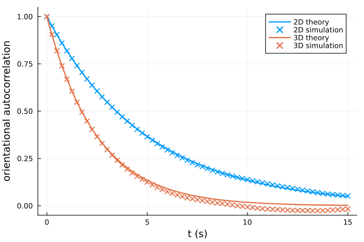

Rotational diffusion
In the absence of active reorientations, the swimming direction of a microbe decorrelates only through rotational diffusion. For a rotational diffusivity $D_r$, the orientational autocorrelation function decays exponentially, with a rate that depends on the dimensionality $d$ of space:
\[\langle \hat{\mathbf{u}}(t) \cdot \hat{\mathbf{u}}(0) \rangle = \exp\left(-(d-1) D_r t\right)\]
We will compare this prediction with simulations of non-tumbling swimmers in two and three dimensions.
using MicrobeAgents
using Plots
using StatsBase: mean
U = 30.0 # μm/s
D_rot = 0.2 # rad²/s
Δt = 0.01 # s
L = 1e4 # μm
n = 200 # microbes per dimension
nsteps = round(Int, 10 / D_rot / Δt)
# only show lags much shorter than the simulation, where statistics are good
nlags = round(Int, 3 / D_rot / Δt)
t = range(0, nlags*Δt; step=Δt)
plt = plot(
xlab="t (s)", ylab="orientational autocorrelation",
ylims=(-0.05, 1.05),
)
for D in 2:3
space = ContinuousSpace(ntuple(_ -> L, D))
model = StandardABM(Microbe{D}, space, Δt; container=Vector)
# never tumbles: only rotational diffusion reorients the microbes
motility = RunTumble([U], Inf, Isotropic(D))
foreach(_ -> add_agent!(model; motility, rotational_diffusivity=D_rot), 1:n)
adf, = run!(model, nsteps; adata=[direction])
Φ = mean(Analysis.acf(adf, :direction; normalize=true))[1:nlags+1]
plot!(plt, t, exp.(-(D-1) * D_rot .* t), lw=2, lc=D-1, label="$(D)D theory")
lags = 1:25:length(t)
scatter!(plt, t[lags], Φ[lags], m=:x, mc=D-1, msw=2, label="$(D)D simulation")
end
plt